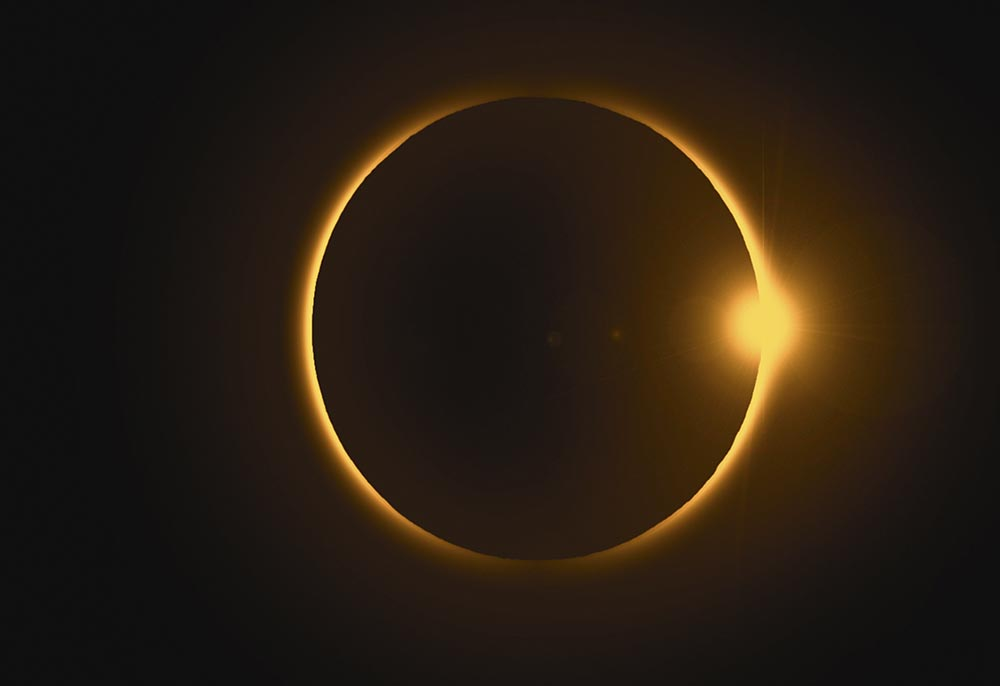

Zemlja obilazi oko Sunca. Mesec obilazi oko Zemlje. Kad Mesec dođe tačno između Zemlje i Sunca on baca senku na Zemlju i iz mesta Zemlji koja su u toj senci vidi se pomračenje Sunca. Mesec može potpuno da zakloni Sunce jer ima isti prividni prečnik kao i Sunce. Kad Zemlja dođe tačno između Sunca i Meseca ona baca senku na Mesec i nastaje pomračenje Meseca.
Prečnik Meseca je tek približno četiristoti deo Sunčevog. Ali kako je Sunce 400 puta dalje od Zemlje, njegov prividni (uglovni) prečnik, posmatran sa Zemlje, približno je isti kao i Mesečev.
Pretpostavimo li da se Zemlja oko Sunca i Mesec oko Zemlje kreću u istoj ravni, tada bi uvek za vreme mladog meseca Sunce potpuno osvetljavalo suprotnu stranu Meseca i o svakom mladom mesecu bilo bi potpuno pomračenje Sunca, posto bi se tada Zemlja, Mesec i Sunce nalazili na jednoj pravoj liniji. O svakom punom mesecu pak, Sunce, Zemlja i Mesec bi se u tom trenutku nalazili na jednoj pravoj, pa bi uvek dolazilo do pomračenja Meseca. Međutim, ovo se uvek ne događa zato sto se ravni Zemljine i Mesečeve putanje ne poklapaju.
Ravan Meseceve putanje zaklapa ugao od oko 51* sa ravni Zemljine putanje. Ako se Zemlja, Mesec i Sunce u vreme kad moze doći do pomračenja ne nalaze na jednoj pravoj, pomračenja neće biti. Sem toga, Mesečeva putanja je elipsa. Zato je on nekad blizi Zemlji a nekad dalje od nje, zato nekad izgleda veći a nekad manji. Zbog toga, i kad su ispunjeni uslovi za pomračenje Sunca, neće ono biti uvek iste vrste. Ako je tada Mesec na takvoj daljini od Zemlje da prividni prečnik isti kao Sunčev ili veći, nastupiće potpuno pomračenje Sunca, a ako mu je prividni prečnik manji od Sunčeva, on ce zakloniti samo centralni deo Sunca pa će se oko Meseca videti svetao prsten, dogodiće se prstenasto pomračenje Sunca.
Delimično pomračenje Sunca događa se kad Mesec zakloni samo jedan deo Sunca. Kako je Mesec manji i njegova je senka manja, tako da se pomračenje Sunca vidi samo sa vrlo ograničene površine na Zemlji. Kako je Zemljina senka vrlo široka, to se Mesečevo pomračenje vidi sa velike površine na Zemlji. Konus potpune Zemljine ill Mesečeve senke (umbra) okružen je polusenkom (penumbra).